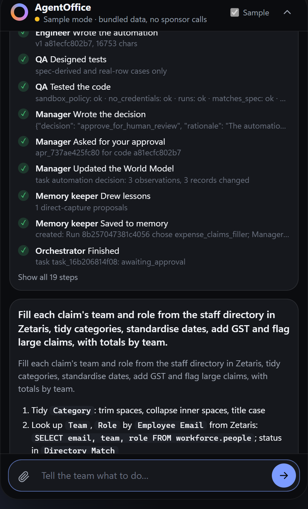
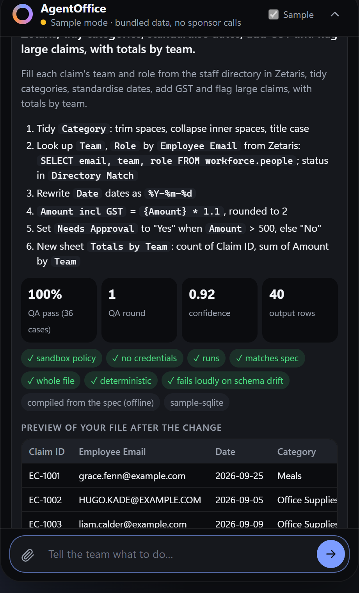
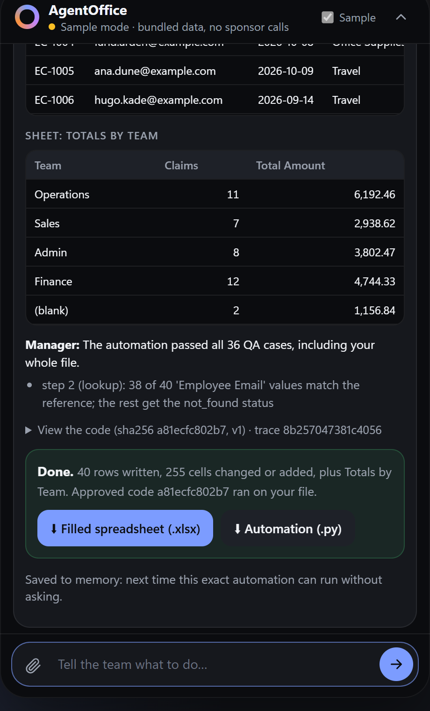

Open Agent Hackathon 2026 · Track 3 · Reasoning Architecture
AgentOffice
An AI office team you just tell what to do. It plans the spreadsheet work, writes the automation, tests it on your data, and asks before anything runs.
Team Automaters · Built on Zetaris, Meterless Nightshift and NVIDIA Nemotron
Office teams lose hours to work nobody has time to fix
Who
Small office teams
Ops, finance and admin teams with no automation engineer on staff.
Where it hurts
Repeated manual steps
Email, PDF, spreadsheet, ERP: the same steps many times a day, across tools nobody connected.
What’s missing
Someone to fix it safely
Find the routine, prove it’s worth it, build and test it, and get sign-off.
Synthetic dataset · invoice matching · hours per week
Three systems, three answers
71.5
Timesheets
What people reported
32.9
Activity log
Measured hands-on time: the one we size automations against
19.5
Ticket system
What people chose to log
The World Model keeps all three, flags the conflict on the record, and the Conflict Critic explains which source to trust for what.
Tell it the task. Approve the code. Get the file.
Engineer · wrote the automation
Fill in each employee’s team and role from the staff directory, fix the dates, flag claims over 500, totals by team. expense_claims.xlsx
QA · every case passed · whole file matches the plan
Preview: Team, Role, Amount incl GST, Needs Approval filled in; new sheet Totals by Team
Approve & run
Ctrl+Shift+Space opens it over any app
1
Say it, attach it. Plain words plus a CSV or Excel file, from a floating island like Copilot.
2
Plan on real data. The file is profiled through Zetaris; the PM writes a step plan; a critic checks every column, lookup and date format against it.
3
Build and test. Nemotron writes the Python; QA checks it against an independent reference of the plan on your rows and edge cases, and sends failures back.
4
You approve the exact code. Only then does it run: a filled workbook with an audit sheet.
5
It remembers. Next week’s file: same approved code, re-tested, runs without asking.
What it looks like

Every agent step streams in live

The plan, QA checks and a preview before approval

Approved code runs; download the filled file
Screens from the expense-claims demo in sample mode; live runs show the Nemotron route in the header.
Ask where the time goes: three stages, one shared memory
1 · Discover · Track 1
Where does the time go?
Source Mapper · Reconciler · Conflict Critic
2 · Explain · Track 2
Why is this the bottleneck?
Research Planner · Retriever · Report Writer · Insight Critic
Shared World Model: every agent reads its context from it and writes what it learns back. H-MEM carries lessons and human decisions from one run to the next.
The build loop argues first
Priority Critic
Sends back any claim above the hands-on time the activity log measures · max 2 rounds
PM
Ranks routines, writes the spec
Engineer
Writes code from the spec
QA
Tests the code against the spec
Manager
Decides behind a rule gate
Human
Approves the exact code hash
QA’s failing cases go back to the Engineer · max 3 revisions
Every arrow is a traced handoff in logs/trace-<run_id>.jsonl, hash-chained so edits are detectable.
QA tests the spec, never the code
1
The PM writes a spec, not prose
A small rule language: a key, ordered checks, and the statuses they lead to.
2
QA derives the expected results
From the spec alone: every branch, tolerance edges, case and spacing, ambiguous keys, and a renamed column that must fail loudly.
3
The code runs in a sandbox
Allowed imports only, no eval or file access, an empty environment and a hard timeout.
invoice_po_matcher
key: po_number (strip, upper)
check: vendor equals_ci → vendor_mismatch
check: amount within 1% → amount_mismatch
statuses: no_po · ambiguous_po · matched
Halve the tolerance in the code, and QA catches it. That case is in the test suite.
Memory changes what the team does next
Session 1
Learns
The team proposes the invoice matcher. The finance manager rejects it: “ERP writes need my sign-off first.”
Session 2
Recalls
The Memory Keeper retrieves that decision. The PM proposes order-status replies instead.
Session 3
Acts on it
With that approved, it moves on to CRM dedupe. A Finance-only question escalates instead of asking again.
H-MEM, built to the Meterless reference: 8-signal retrieval with reasons, an approval boundary for new memories, conflicts resolved on the record, a hash-chained trust ledger. Tested end to end.
Zetaris is the data layer, end to end
Your upload is a Zetaris table
Our API serves the workforce tables and every uploaded sheet (one row per cell) as JSON; seven statements, run one at a time after a dry run, register them as Lightning REST tables.
Agents write plain SQL
The profiler reads your file with SQL, the PM’s lookups pull the staff directory with SQL, and the analysts ground every finding in SQL rows. No views; the trace keeps both versions of the SQL.
Verified on a live install
All 15 pipeline queries ran on local Zetaris 2.4.3, with findings identical to the sample run.
REST table
Rows
people
12
timesheets
827
tickets
223
email_events
2,672
task_events
8,266
upload_cells
live
Workforce counts match the generator’s manifest; upload_cells is re-read at query time, so a file is queryable the moment it’s uploaded.
Meterless: provider and two engines
Power rule
Nightshift, primary provider
The full provider contract: status from GET /v1/models, auto-detect, connect links, a 180 s timeout. Every call logs the model that answered.
Build rule · engine 1
World Model
Content-hash IDs, an append-only log with row provenance, a 10-step idempotent ingest. Stage 1’s source conflicts are its conflict records.
Build rule · engine 2
H-MEM
Tiered memory behind an approval boundary, 8-signal retrieval with reasons, a hash-chained trust ledger. Approved automations run again without asking.
NVIDIA: Nemotron models run through Nightshift lanes, hosted, with no local GPU. Route used: meterless/deep → nvidia/nemotron-3-ultra-550b-a55b, recorded in every trace.
Every step leaves evidence
Agent
Action
Status
SourceMapperAgent
zetaris_query
skipped (sample)
ConflictCriticAgent
critique_sources
needs_attention
InsightCriticAgent
critique_claims
approved
PriorityCritic
critique_priority
approved
QAAgent
critique_output
approved
ManagerAgent
request_approval
pending
Real events from a sample-mode run: output_examples/sample_mode/example_1.trace.jsonl (59 events).
Hash-chained
Edit or delete a line and verification fails.
Bound to code
An approval covers one code hash, nothing else.
Runs without keys
Sample mode runs the real agent logic on synthetic data.
158 tests
Also passing inside the Docker image on Python 3.11.
Live results: Nemotron + Zetaris, 25 Oct
Spreadsheet task
Plan steps
QA rounds
Final QA · after approval
Expense claims: staff lookup in Zetaris, dates, GST, flags, totals
7
3 (policy, then blanks)
49 / 49 · 275 cells
Leads vs CRM sheet: split names, owner, status
4
1
34 / 34 · 119 cells
Vendor invoices: dedupe, fill, overdue, sort
6
1
40 / 40 · 34 → 30 rows
Analysis question
Automate first
Saved / wk
QA
Finance: where are we losing time?
invoice matching (high risk)
≈ 24.4 h
28 / 28
Operations: what is eating the week?
order status updates
≈ 7.9 h
25 / 25
Sales: is CRM data entry worth it?
CRM data entry
≈ 7.1 h
28 / 28
What it’s built with
Runtime
Python 3.11, FastAPI, httpx, openpyxl; a plain-JS chat island
State
SQLite for the World Model and H-MEM; JSONL traces
Data
Zetaris 2.4.3 in local Docker, Lightning REST tables
Models
Meterless Nightshift, NVIDIA Nemotron lanes
Packaging
Docker on python:3.11-slim; sample mode needs no keys
Built with
Claude Code; every line reviewed and tested
What comes next
1
Real exports in
Register a team’s ERP and CRM exports in Zetaris; the agents’ SQL stays the same.
2
Dry run, run and undo
Show the changes an approved automation would make, then apply them reversibly.
3
Scheduled runs and more step types
Run approved automations on each new file automatically; add steps for emails, PDFs and pivots.
4
Memory that consolidates
H-MEM dreaming and sleep: merge related lessons, archive stale ones.
5
Priorities learned from approvals
Weight the PM’s ranking by what humans approved and rejected before.
A team that argues, tests and remembers, and asks before it acts.